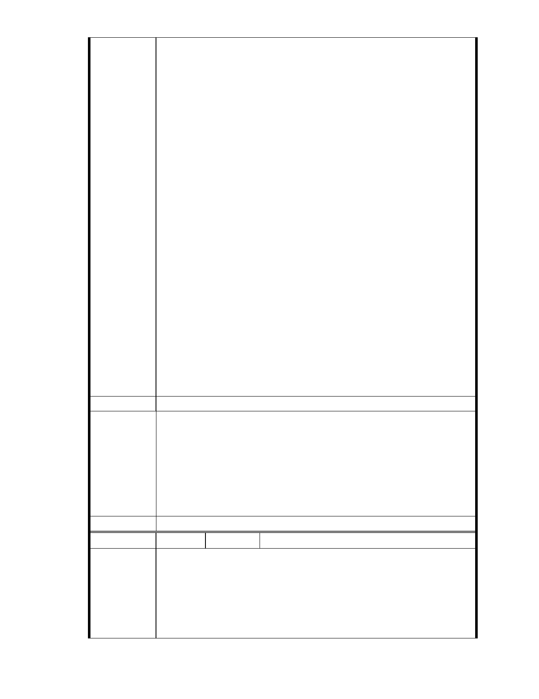

構使用，應依「開發行為應實施環境影響評估細目及範圍認定標準」第
31 條第 1 項第 12 款規定：「安養中心、護理機構或長期照護機構、養
護機構、安養機構等老人福利機構，其興建或擴建工程符合第一款第一
目至第九目規定之一」規定辦理。
四、另依據「開發行為應實施環境影響評估細目及範圍認定標準」第 31 條
第 l 項第 1 款第 6 目：「位於山坡地、國家風景區或台灣沿海地區自然
環境保護計畫核定公告之一般保護區，申請開發或累積開發面積一公頃
以上，應實施環境影響評估」之規定，本案變更山坡地保護區作為社會
福利特定專用區允許設置安養中心、護理機構或長期照護機構、養護機
構、安養機構等老人福利機構… 使用，且申請開發面積一公頃以上，應
實施環境影響評估。
五、台北市政府環保局設置老人「輕安居中心」部分：依據「認定標準」
第 31 條第 11 款「安養中心」、「老人福利機構（包括長期照護機構、
養護機構、安養機構）」之興建，若位於山坡地之區位，且申請開發面
積 1 公頃以上，即應實施環評。（詳 960713 第二次討論會議紀錄）。
六、本案週圍山坡地之坡腳部分之天然排水溝與鄰接南基地東北角之三
合院基地… 均為佛教慈濟慈善基金會所有土地，週圍相鄰土地超過 16
公頃以上，實不容切割成小於 5 公頃以下基地申請，再強行冠以文教建
設開發之名義免實施環評，這種規避環評的拙劣手法，一般人一看就懂，
官員及 貴委員會怎會不知？
七、本大廈緊鄰慈濟內湖園區，變更後之負面影響最鉅，請貴會通知本
大廈管理委員會列席參與該案後續所有審議、專案小組會議及大會，並
請依政府資訊公開法將會議時間、地點，以及會議資料、紀錄等相關資
訊提前公開上網，俾便閱覽。
建議辦法
一、本案申請範圍於慈濟購得前已遭填平破壞作汽車停車場使用，已長
年不具保護區之功能；目前申請方案較先前方案已大幅降低開發強
市府說明
度、調整使用項目並承諾大面積滯洪設施等回饋事項，顯示申請單
位欲改善現況之誠意。
二、本案目前提出方案之使用項目未含「開發行為應實施環境影響評估
細目及範圍認定標準」第 31 條所列之安養照護設施。
三、相關陳情意見將納入本案審查人民意見，依法定程序辦理。
委 員 會 決 議 同編號 1。
編號
陳情理由
153 陳情人 大湖內閣大廈管理委員會
發文日期：中華民國 101 年 10 月 22 日
發文字號：內慈字第 1011009 號
主旨：
有關「變更臺北市內湖區成功路五段大湖公園北側部分保護區及道路用
地為社會福利特定專用區主要計畫案」，本大廈全體住戶依據 貴委員會
歷次專案小組會議委員意見，提出本案應實施環境影響評估陳情意見，
- 223 -